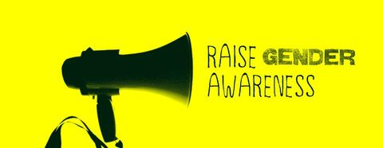
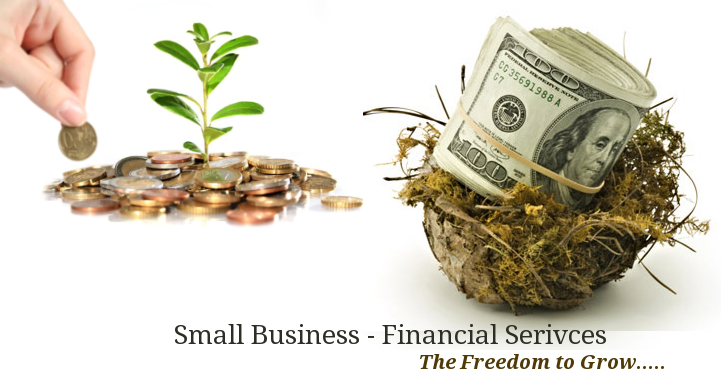
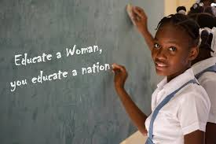

Improving the life of a girl child.
Opposing to Female Genital Mutilation
FGM is where the female external genitalia is being removed.This practice is normally done in Africa,Kenya among other countries. It is not a very good act because it may lead to complication later in future.
Disadvantages of Female Genital Mutilation
- Excessive bleeding may occur.
- Genital tissue swelling.
- It may result to death.
Supporting girl child education
.webp)
It is a brave decision to support a girl child education expenses. Each and every girl in a community needs https://bit.ly/33cuKo2to study so as to make an amazing impact on her peers and also her life.
Why is it important to educate a girl.
- Education will make a girl to be independent because she will be able to get a job to sustain herself.
- By educating a girl child this will enable her to avoid early marriages.
- Education makes a woman to make her own decisions without anyone opposing to them in a bad way.
- Through education, a girl/woman is able to build self confidence.
Supplying sanitary towels.
.jpeg)
Every girl at an adolescent stage passes through menstruation once a month This can make a girl loose concentration in whatever she is doing especially when she has nothing to cover herself with,that is the sanitary towel. Our foundation bases majorly on distributing sanitary towels to girls every month to avoid period shaming from others.This makes the situation during the period time more relaxing and secretive because no one can notice if a girl is on her periods.
Gender awareness.
In every society is better to practice gender equality.We should always practice to be sensitive in whatever we do or say.Every gender matters,be it a girl or a boy. Girls are being undermined in the society and that is a vice we should all condemn.By doing this we make everyone feel important and comfortable.
Inventing in a small business.
Usually some girls out here are hard working but the problem is having something to start from.Our foundations comes in handy in helping giving out serious individuals loans so as to invent a small scale business and later on to bring interest. By doing this it makes their mind busy and make them grow in a more positive way rather than being idle and broke.
Coordinating with water companies to the community.
As the saying goes,cleanliness is next to godliness.Our foundation makes an effort to make sure the girls are able to have water in their areas.Water is life! This makes them clean and they are able to do lots of things when they have this resource.